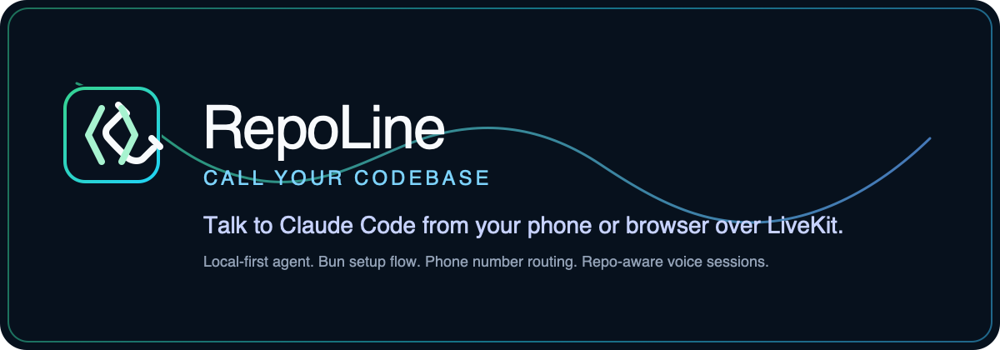

Liked: @jxnlco
Prompt the model to set its own goal.
Open source postWorkflow showoff
A practical demo of turning scattered agent-coding ideas into a repo-owned improvement loop: goals, skills, issues, code, and verification.

The hook
Use saved posts as a signal, not as a content backlog. The useful pattern is to pull out the operating principle and bind it to a real repo.
Prompt the model to set its own goal.
Open source postA strong goal names context, constraints, done-when, verify, output, and stop rules.
Open source postAgentic coding behaves like optimization guided by goals, constraints, specs, and tests.
Open source postOperating model
Why RepoLine works as the demo
RepoLine is strong because future agents do not need to rediscover the operating model. The repo tells them where to look and how to prove work.
AGENTS.md gives the root contract.docs/agents/goals.md keeps the improvement queue.docs/agents/repo-map.md maps the runtime.docs/agents/testing.md names the verification gate.CONTEXT.md captures domain language.Concrete feature example
"While I am explaining an architecture or workflow over voice, let the agent keep a diagram updated in the browser companion so we can see whether the shape is right."
The browser UI already receives RepoLine artifacts over a LiveKit text stream. The feature is a new diagram artifact path, not a whole new product.
One clarifying question
Should the first version be text-first diagrams, like Mermaid, or a freeform whiteboard canvas?
Start Mermaid-first. It is diffable, agent-editable, testable, and can flow through RepoLine's existing artifact model.
A freeform canvas creates harder state, selection, and conflict problems before we have proven the live artifact loop.
If the user needs sketch freedom, make it a later feature. If the user needs shared architecture thinking, text diagrams win.
Live demo prompt
/goal Read RepoLine's AGENTS.md, docs/agents/goals.md,
docs/agents/repo-map.md, docs/agents/testing.md,
docs/HOW-IT-WORKS.md, docs/VOICE-FIRST-BUILD-SPEC.md,
frontend/lib/repoline-artifacts.ts, and CONTEXT.md.
Set the best implementation goal for adding a live diagram artifact
that the agent can update during a voice session.
Do not implement first.
Output:
- goal
- context
- one clarifying question only if it changes the implementation
- constraints
- done when
- verify
- stop rules
- best next Matt Pocock skill to invokeWhat a good generated goal looks like
Add a Mermaid-first diagram artifact path so the agent can publish and replace a rendered diagram in the browser companion during a live voice session.
diagram artifacts parse from the LiveKit text stream.Matt skills as the workbench
$grill-with-docsStress-test the goal against RepoLine's domain language: browser companion, artifacts, voice-session state, approval checkpoints, and mutation boundaries.
$to-issuesTurn the goal into independently grabbable slices: artifact type, renderer, live replacement state, docs, and browser verification.
$tdd or $diagnoseBuild parser and state behavior test-first, or diagnose stream/update failures against the existing artifact path.
AFK-ready issue shape
Title: Add live Mermaid diagram artifacts to RepoLine sessions
Context:
- docs/HOW-IT-WORKS.md browser artifact surface
- docs/VOICE-FIRST-BUILD-SPEC.md browser companion and approvals
- frontend/lib/repoline-artifacts.ts current artifact model
- frontend/hooks/useRepolineArtifacts.ts stream ingestion
Task:
- add a `diagram` artifact kind with `language=mermaid`
- render latest diagram artifact in the browser companion
- keep source visible so the agent's changes are inspectable
- add tests for parser, sorting, replacement, and bad input
- document the voice-session behavior and non-goals
Verification:
- bin/check frontend
- bin/check quickWhy this is more than prompting
A voice-session need reveals a missing browser artifact type.
Skills interrogate artifact flow, session state, and approval boundaries.
The coding agent lands the smallest Mermaid-first live diagram slice.
Frontend and full handoff gates prove the touched surface still works.
Docs, tests, and issue history record why canvas was deferred.
The next visual feature starts from a stronger artifact baseline.
Talk track
"My workflow is not just asking an agent to code. I capture good
operating ideas, ask Codex to turn rough intent into a real goal,
use Matt Pocock skills for the right kind of thinking, and make
the repo carry the context and verification. RepoLine is the
example: the live diagram feature starts as a goal, becomes
AFK-ready work, and ends at bin/check quick."